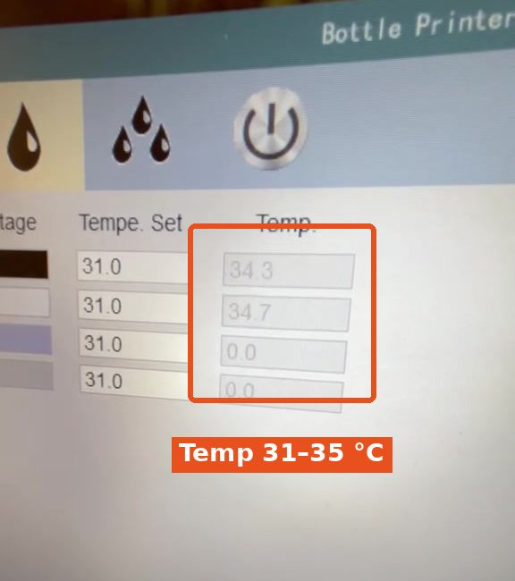
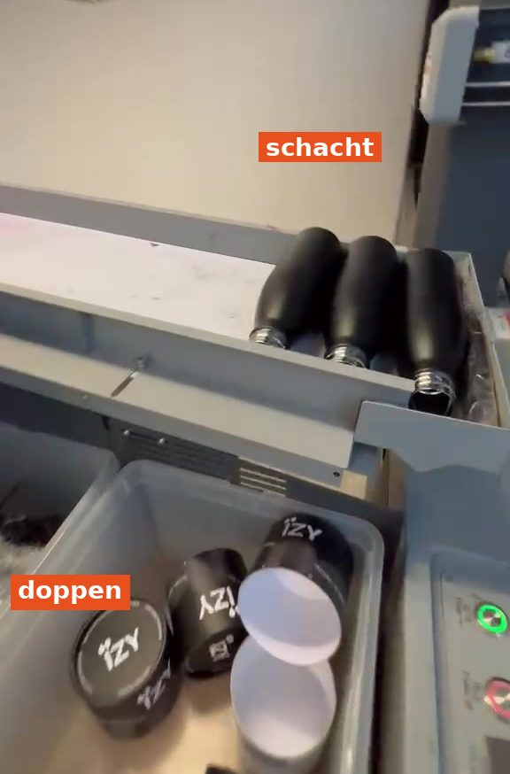
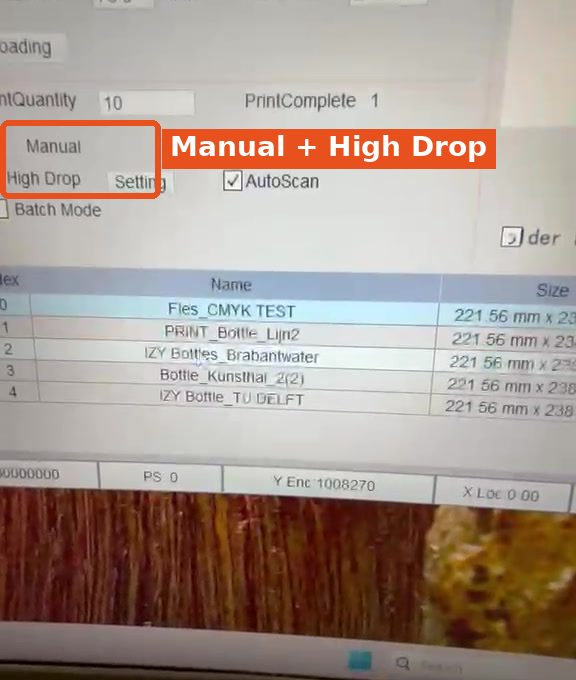
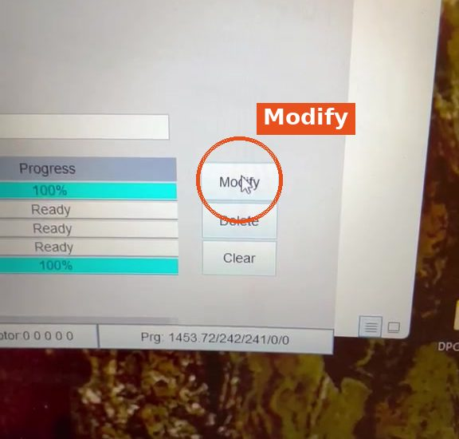
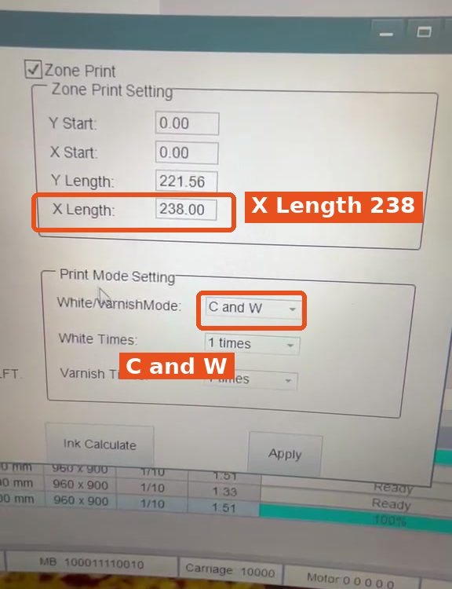
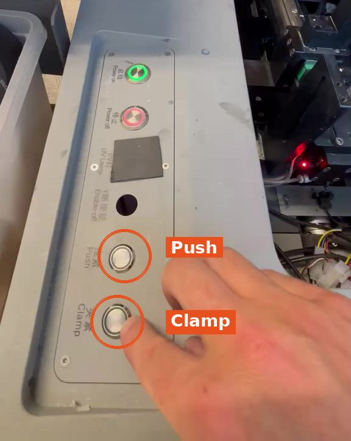

1
Temperatuur controleren
- Kijk in de software bij Temp.
- De printer is warm genoeg vanaf 31 °C, tot ongeveer 34–35 °C.

Zo print je een order op Bottle 1 of Bottle 2. Doe eerst deel 1: printer opstarten.

Doe dit al terwijl de printer opwarmt.





Controleer dit altijd:





Zodra de fles uit de printer komt, doe je het omgekeerde:
Erin: Push → Clamp. Eruit: Clamp → Push.